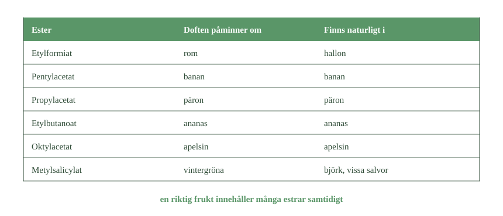
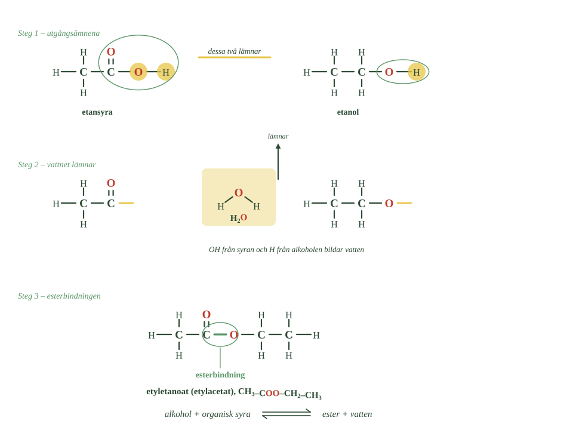
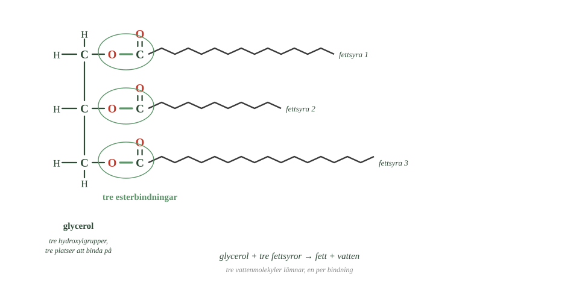

- Vad är det egentligen som når näsan när du känner doften av en frukt?
- Varför luktar en riktig banan annorlunda än bananarom?
- Vad avgör om två molekyler är samma ämne?
- Var används estrar förutom som doftämnen?
- Varför är det en fördel att etylacetat avdunstar lätt?
Nu känner du två funktionella grupper.
Alkoholer har hydroxylgruppen, –OH. Organiska syror har karboxylgruppen, –COOH.
I det här avsnittet ska vi se vad som händer när de två möts.
Då bildas en helt ny sorts ämne: en ester.
Estrar finns överallt omkring dig. De ger frukter och parfymer deras doft, de används som lösningsmedel — och de finns i allt fett du äter.
Doft är molekyler som lämnat frukten
När du känner doften av en banan är det inte något magiskt som når dig.
Det är molekyler. De har lämnat frukten, spridits genom luften och landat i ditt luktsinne.
Många av de molekylerna är estrar.
Olika estrar luktar olika
Vissa estrar har mycket tydliga fruktiga dofter.
En viss ester påminner starkt om banan. En annan om päron. En tredje om ananas.
- Ser du något mönster i esternamnens ändelser?
- Vilken ester finns i något som inte är en frukt?
- Varför smakar konstgjord bananarom inte exakt som banan?

Det är samma sorts molekyl i alla tre — det som skiljer dem är hur många kolatomer de har och hur de sitter ihop.
Men en riktig frukt luktar mer än så
En banan innehåller inte bara en ester.
Doften är en blandning av många olika ämnen, och det är kombinationen som gör att en riktig banan luktar sammansatt.
Bananarom innehåller ofta bara en eller några få av dem.
Därför kan ett smakämne smaka tydligt av banan utan att smaka som en banan. Det saknas molekyler.
Konstgjorda doftämnen är samma molekyler
Estrar bildas av levande organismer, men de kan också tillverkas i en fabrik.
Här är en viktig sak att förstå.
Har två molekyler exakt samma atomer bundna på exakt samma sätt är de samma ämne — oavsett var de kom ifrån.
En ester tillverkad i en fabrik är alltså identisk med samma ester i en frukt. Det finns ingen kemisk skillnad.
Sådana ämnen används i läsk, godis, glass, parfym och kosmetika.
Skillnaden mellan en naturlig fruktdoft och en enkel arom ligger alltså i antalet molekyler, inte i att någon enskild molekyl skulle vara annorlunda.
Estrar är också lösningsmedel
Många estrar löser andra ämnen bra, och används därför i färg, lack och lim.
Ett vanligt exempel är etylacetat. Det avdunstar lätt, vilket gör det användbart: det löser ämnena medan man arbetar och försvinner sedan när produkten torkar.
Lukten av nagellack och lim kommer ofta därifrån.
Det är alltså samma ämnesgrupp som ger frukten sin doft.
- Vad är det egentligen som når näsan när du känner doften av en frukt?
- Varför luktar en riktig banan annorlunda än bananarom?
- Vad avgör om två molekyler är samma ämne?
- Var används estrar förutom som doftämnen?
- Varför är det en fördel att etylacetat avdunstar lätt?
Vi känner nu två funktionella grupper. Alkoholer har hydroxylgruppen, –OH. Organiska syror har karboxylgruppen, –COOH.
Nu ska vi se vad som händer när de möts. Då kan det bildas en helt ny sorts ämne: en ester.
Estrar finns på många håll omkring oss. De ger frukter och parfymer sin doft, de används som lösningsmedel — och de finns i allt fett.
Frukternas doft kommer bland annat från estrar
När du känner doften av en banan, ett päron eller en ananas är det molekyler som lämnat frukten, spridits genom luften och nått ditt luktsinne.
Många av dem är estrar.
Vissa estrar har mycket tydliga fruktiga dofter. En viss ester påminner starkt om banan, en annan om päron.
Men en riktig frukt innehåller inte bara en ester. Doften är en blandning av många ämnen, och det är kombinationen som gör att en riktig banan luktar mer sammansatt än bananarom.
Därför kan ett smakämne smaka tydligt av banan utan att smaka som en banan.
Konstgjorda doftämnen är samma molekyler
Estrar bildas av levande organismer, men kan också tillverkas i fabrik.
Har två molekyler exakt samma atomer bundna på samma sätt är de samma ämne, oavsett var de bildats.
En ester tillverkad i en fabrik är alltså identisk med samma ester i en frukt.
Sådana ämnen används som smak- och doftämnen i läsk, godis, glass, parfym och kosmetika.
Skillnaden mellan en naturlig fruktdoft och en enkel arom ligger alltså i antalet molekyler, inte i att någon enskild molekyl skulle vara annorlunda.
Estrar är också lösningsmedel
Många estrar fungerar bra som lösningsmedel och används i färg, lack och lim.
Ett vanligt exempel är etylacetat. Det avdunstar lätt, vilket gör att det kan lösa andra ämnen medan produkten används och sedan försvinna när den torkar.
Lukten av nagellack och lim kommer ofta därifrån. Det är alltså samma ämnesgrupp som ger frukten sin doft.
Näsan är ett kemiskt instrument med orimlig känslighet
Standardtexten säger att doft är molekyler som lämnat frukten och nått luktsinnet. Det stämmer, men det säger inget om hur lite som räcker.
För de flesta estrar behöver du ungefär en miljarddels gram per liter luft för att känna lukten. För några ämnen räcker betydligt mindre än så.
Den nivån kallas tröskelvärde, och den varierar enormt mellan olika molekyler. Etylacetat märks först vid förhållandevis hög halt. Vissa svavelföreningar märks vid en tusendel av det.
Det förklarar något viktigt om fruktdofter. En doft består sällan av det ämne som finns mest av. Den består av de ämnen som har lägst tröskelvärde — de som näsan råkar vara känsligast för.
En banan innehåller hundratals flyktiga ämnen, men bara ungefär tjugo av dem bidrar märkbart till doften. Ett par av dem finns i så små mängder att de knappt går att mäta, och ändå avgör de hur frukten luktar.
Det är därför konstgjorda aromer är svåra att få perfekta. Man kan analysera en frukt och hitta alla ämnen, men det räcker inte att blanda dem i rätt proportioner. Man måste också veta vilka näsan bryr sig om.
Och det förklarar en sak till. Två molekyler som skiljer sig mycket lite — samma atomer, spegelvänd form — kan lukta helt olika. Näsans receptorer känner igen molekylens form, inte dess formel.
Om modellen. "Doft är molekyler som når näsan" är korrekt men gör lukt till en fråga om mängder. Den är i själva verket en fråga om igenkänning. Näsan är inte en detektor som mäter hur mycket som finns — den är en uppsättning lås som passar för vissa former.
- Vilka två ämnen behövs för att bilda en ester?
- Vilken del lämnar syran, och vilken del lämnar alkoholen?
- Vad bildas av de två delar som lämnar?
- Vad kallas den nya kopplingen som blir kvar?
- Vad gör svavelsyran i reaktionen?
De två delarna möts
En alkohol har en hydroxylgrupp, –OH.
En organisk syra har en karboxylgrupp, –COOH.
När de reagerar med varandra bildas en ester.
Med ord:
alkohol + organisk syra \(\ce{<=>}\) ester + vatten
Ta etanol och etansyra som exempel. Då bildas estern etyletanoat, och vatten.
Produkten är varken en alkohol eller en syra längre. Atomerna har kopplats samman på ett nytt sätt, och ett helt nytt ämne har bildats.
En vattenmolekyl lämnar
Nu till det viktigaste i hela avsnittet. Ta det långsamt.
När estern bildas kopplas alkoholen och syran ihop — samtidigt som en vattenmolekyl lämnar.
- Vilken molekyl lämnar OH, och vilken lämnar H?
- Vad bildas av de två gula delarna tillsammans?
- Räkna atomerna i steg ett och i steg tre. Stämmer de?

Tre steg:
Steg 1. Från syrans karboxylgrupp lämnar en OH-del.
Steg 2. Från alkoholens hydroxylgrupp lämnar en väteatom, H.
Steg 3. OH och H sätter sig ihop och bildar \(\ce{H2O}\) — en vattenmolekyl.
Lägg märke till vem som lämnar vad. Syran lämnar OH. Alkoholen lämnar H. Tillsammans blir det vatten.
Esterbindningen blir kvar
När vattnet har lämnat finns två lediga platser: en på syrans kolatom och en på alkoholens syreatom.
De binder till varandra.
Den nya kopplingen kallas esterbindning.
Estern av etansyra och etanol skrivs:
\(\ce{CH3-COO-CH2-CH3}\)
Reaktionen kallas esterbildning eller förestring.
Svavelsyra skyndar på reaktionen
Blandar man bara en alkohol och en organisk syra går reaktionen mycket långsamt.
Därför tillsätter man ofta svavelsyra som katalysator.
En katalysator får reaktionen att gå snabbare utan att själv förbrukas. Det är samma princip som i bilens katalysator, som du mötte i delkapitel 3.
Svavelsyran får alltså inte någon annan reaktion att ske. Den hjälper bara den vanliga esterbildningen på traven.
- Vilka två ämnen behövs för att bilda en ester?
- Vilken del lämnar syran, och vilken del lämnar alkoholen?
- Vad bildas av de två delar som lämnar?
- Vad kallas den nya kopplingen som blir kvar?
- Vad gör svavelsyran i reaktionen?
De två delarna möts
En alkohol innehåller en hydroxylgrupp, –OH. En organisk syra innehåller en karboxylgrupp, –COOH.
När de reagerar med varandra bildas en ester.
Reaktionen kan skrivas med ord:
alkohol + organisk syra \(\ce{<=>}\) ester + vatten
Som exempel kan etanol reagera med etansyra. Då bildas etyletanoat och vatten.
Produkten är alltså varken en alkohol eller en syra längre. Atomerna har kopplats samman på ett nytt sätt, och ett ämne med nya egenskaper har bildats.
En vattenmolekyl lämnar
När estern bildas kopplas alkoholen och syran samman samtidigt som en vattenmolekyl lämnar.
Tre steg:
- Från syrans karboxylgrupp lämnar en OH-del.
- Från alkoholens hydroxylgrupp lämnar en väteatom.
- OH och H bildar tillsammans \(\ce{H2O}\).
När vattnet lämnat binds syrans kolatom samman med syreatomen från alkoholen. Den nya kopplingen kallas esterbindning.
Estern av etansyra och etanol skrivs:
\(\ce{CH3-COO-CH2-CH3}\)
Reaktionen kallas esterbildning eller förestring.
Svavelsyra skyndar på reaktionen
Blandar man bara en alkohol och en organisk syra går esterbildningen långsamt.
Därför tillsätts ofta svavelsyra som katalysator.
En katalysator får reaktionen att gå snabbare utan att själv förbrukas — samma princip som i bilens katalysator.
Svavelsyran får alltså inte en annan reaktion att ske. Den hjälper den vanliga esterbildningen på traven.
Reaktionen tar aldrig slut
Standardtexten skriver esterbildningen med en dubbelpil och säger att svavelsyra gör den snabbare. Båda delarna stämmer, men dubbelpilen betyder mer än det ser ut.
Blandar du lika mängder etanol och etansyra och väntar tillräckligt länge händer följande: ungefär två tredjedelar omvandlas till ester, och där stannar det.
Inte för att syran tar slut. Den finns kvar. Reaktionen fortsätter — men lika fort åt andra hållet.
Det är jämvikt. Ester bildas och bryts ner i samma takt, och därför ändras ingenting mätbart även om allt fortfarande pågår.
Det får en praktisk följd. Vill man få ut mer ester måste man rubba jämvikten, och det görs på två sätt.
Ta bort vattnet. Utan vatten kan reaktionen inte gå baklänges, och mer ester bildas. Det är därför svavelsyra är så användbar — den är inte bara katalysator utan binder också vatten.
Tillsätt mer av ett utgångsämne. Har man gott om alkohol trycks jämvikten mot estersidan.
Katalysatorn gör däremot ingenting åt jämviktsläget. Den får bara reaktionen att nå dit snabbare — åt båda hållen lika mycket.
Om modellen. Att skriva en pil mellan utgångsämnen och produkter antyder att reaktionen går från vänster till höger och sedan är färdig. De flesta organiska reaktioner gör inte det. De når ett läge där båda riktningarna pågår, och kemistens arbete består ofta i att flytta det läget — inte i att få reaktionen att ske.
- Vad berättar en esters namn?
- Hur många hydroxylgrupper har glycerol, och vad betyder det?
- Vad består en fettmolekyl av?
- Vad händer med esterbindningen när en ester möter vatten?
- Varför måste fett brytas ner innan kroppen kan ta upp det?
Namnet berättar vilka delar som ingår
En esters namn visar vilka två ämnen den bildats av.
När etanol reagerar med etansyra bildas etyletanoat.
Läs namnet i delar. Etyl- kommer från etanol. -etanoat kommer från etansyra.
Ämnet kallas också etylacetat, efter det äldre namnet på syrans jon.
Du behöver inte kunna namnge alla estrar. Principen räcker: namnet visar vilka två delar som kopplats samman.
Fetter är estrar
En av biologins viktigaste alkoholer är glycerol.
Kommer du ihåg den från förra delkapitlet? Den hade tre hydroxylgrupper.
- Räkna ringarna. Hur många esterbindningar finns det?
- Varför är det just tre, och inte två eller fyra?
- Är de tre fettsyrorna lika långa?

Tre hydroxylgrupper betyder tre platser där esterbindningar kan bildas.
Reagerar glycerol med tre långa organiska syror — fettsyror — bildas tre esterbindningar samtidigt.
Resultatet är en fettmolekyl.
glycerol + tre fettsyror \(\rightarrow\) fett + vatten
Ett fett är alltså i grunden en ester. Fast med tre bindningar i stället för en.
Det är därför just glycerol sitter i mitten av varje fettmolekyl. Den har exakt tre platser att binda till.
Fetterna undersöker vi närmare i nästa delkapitel.
Esterbindningen kan brytas igen
Esterbildningen går åt båda hållen.
Möter en ester vatten kan bindningen brytas, och molekylen delas upp i en alkohol och en organisk syra igen:
ester + vatten \(\ce{<=>}\) alkohol + organisk syra
I kroppen sker det med hjälp av enzymer — kroppens egna verktyg för att bryta bindningar.
Därför måste fett smältas
När du äter fett kan kroppen inte ta upp molekylerna som de är. De är för stora.
Först måste esterbindningarna mellan glycerolen och fettsyrorna brytas. Då faller fettmolekylen isär i sina fyra delar — glycerolen och de tre fettsyrorna — och de kan tas upp var för sig.
En bindning, två världar
Här möts två delar av kemin som verkar ha lite med varandra att göra.
Samma esterbindning som ger frukten sin doft byggs och bryts när kroppen smälter maten.
En enda bindningstyp. Två helt olika sammanhang.
- Vad berättar en esters namn?
- Hur många hydroxylgrupper har glycerol, och vad betyder det?
- Vad består en fettmolekyl av?
- Vad händer med esterbindningen när en ester möter vatten?
- Varför måste fett brytas ner innan kroppen kan ta upp det?
Namnet berättar vilka delar som ingår
En esters namn visar vilka ämnen den bildats av.
När etanol reagerar med etansyra bildas etyletanoat. Första delen, etyl-, kommer från etanol. Andra delen, -etanoat, kommer från etansyra.
Ämnet kallas också etylacetat, efter det äldre namnet på syrans jon.
Vi behöver inte kunna namnge alla estrar. Principen räcker: namnet visar vilka två delar som kopplats samman.
Fetter är estrar
En av biologins viktigaste alkoholer är glycerol.
Glycerol har tre hydroxylgrupper. Det betyder tre platser där esterbindningar kan bildas.
Reagerar glycerol med tre långa organiska syror — fettsyror — bildas tre esterbindningar samtidigt. Resultatet är en fettmolekyl.
glycerol + tre fettsyror \(\rightarrow\) fett + vatten
Ett fett är alltså i grunden en ester med tre esterbindningar.
Det är därför just glycerol sitter i mitten av varje fettmolekyl: den har exakt tre platser att binda till.
Fetterna undersöker vi närmare i nästa delkapitel.
Esterbindningen kan brytas igen
Esterbildningen går åt båda hållen.
Möter en ester vatten kan bindningen brytas, och molekylen delas upp i en alkohol och en organisk syra igen:
ester + vatten \(\ce{<=>}\) alkohol + organisk syra
I kroppen sker det med hjälp av enzymer.
När du äter fett måste de stora molekylerna först brytas ner. Esterbindningarna mellan glycerolen och fettsyrorna spjälkas, så att delarna kan tas upp.
Här möts två delar av kemin som verkar ha lite med varandra att göra. Samma esterbindning som ger frukten sin doft byggs och bryts när kroppen smälter maten.
Dubbelbindningen avgör om fettet är flytande
Standardtexten säger att ett fett är glycerol med tre fettsyror. Det stämmer, och det räcker för att förstå vad ett fett är. Men det förklarar inte varför olivolja är flytande och smör fast — båda är ju fetter.
Skillnaden sitter i fettsyrorna, och närmare bestämt i deras dubbelbindningar.
I delkapitel 2 mötte du begreppen mättat och omättat. En mättad fettsyra har bara enkelbindningar mellan kolatomerna. En omättad har minst en dubbelbindning.
Och i fördjupningen till 3.2 i det delkapitlet såg du att en dubbelbindning inte går att vrida på.
Där möts de två sakerna.
En mättad fettsyra är en rak kedja. Raka kedjor kan ligga tätt intill varandra, packa sig hårt och hålla fast med van der Waals-krafter längs hela längden. Ämnet blir fast.
En omättad fettsyra har en knyck där dubbelbindningen sitter, och knycken går inte att räta ut. Molekylerna kan inte packa sig lika tätt, attraktionen blir svagare, och ämnet blir flytande.
Det är hela skillnaden mellan smör och olivolja. Samma sorts molekyl, samma esterbindningar — men en knyck på rätt ställe.
Det förklarar också varför fleromättade fetter är ännu mer flytande, och varför fiskolja som kommer från kalla vatten är flytande också i kylskåp.
Om modellen. Standardnivån behandlar fett som en enda sorts ämne definierad av esterbindningarna. Det är rätt kemiskt. Men alla egenskaper man faktiskt märker av — konsistens, smältpunkt, hur ett fett beter sig i en stekpanna — bestäms av något annat: formen på de tre kedjorna som hänger av från glycerolen.
Laddar övningskort…
Laddar frågor ...